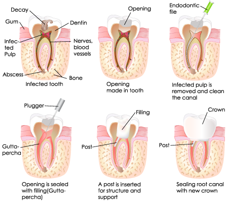
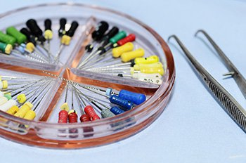

What is an Endodontist?
Endodontists are dentists who specialize in maintaining teeth through endodontic therapy — procedures, involving the soft inner tissue of the teeth, called the pulp. The word “endodontic” comes from “endo” meaning inside and “odont” meaning tooth. Like many medical terms, it’s Greek. All dentists are trained in diagnosis and endodontic therapy, however, some teeth can be especially difficult to diagnose and treat. Thats why you may have been referred to an endodontic specialist.
In addition to dental school, endodontists receive two or more years of advanced education in this kind of treatment. They study root canal techniques and procedures in greater depth, for diagnosis and treatment of more difficult cases. For this reason, many dentists choose to refer their patients to endodontists.
What Happens During Endodontic Treatment? or What is a Root Canal?

From Infection to Restoration
The Root Canal Procedure
A local anesthetic will be given. A sheet of latex called the “rubber dam” (we’ve got non-latex ones too) will be placed around the tooth to isolate it, hence keeping it clean and dry during treatment. The treatment consists of three or four basic steps, but the number of visits will depend on your particular case. Some treatments take 2 visits but many are just a single visit. Occasionally 3 appointments are needed.
In any case, it depends on the degree of infection/inflammation and degree of treatment difficulty. To me, it’s more important to do it the very best we can then to meet a specific time criteria. Let’s look at the basic steps for nonsurgical endodontic therapy.
There are, of course, no guarantees. Root canal or endodontic therapy has a very high degree of success, up to 90%. Teeth which can be treated near ideal have a success rate up to ninety percent! We will discuss with you the chances of success before any endodontic procedure to help you make an informed decision. If a root canal or endodontic therapy is unsuccessful or fails you still have options.
Diagnoses and Treats Pain
Oral pain such as toothaches or cracked / fractured teeth can often be difficult to pinpoint. Because of the vast network of nerves in the mouth, the pain of a damaged or diseased tooth often is felt in another tooth and/or in the head, neck, or ear. An endodontist is a specialist in diagnosing and treating this type of pain.
Treats Traumatic Injuries
Pulp damage is sometimes caused by a blow to the mouth, and the endodontist specializes in treating these traumatic injuries. For example, a blow to a child’s permanent tooth that is not fully developed can cause the root to stop growing. A procedure called apexification stimulates bone to be deposited at the end of the root which makes it possible to then save the tooth through a root canal procedure. An endodontist is specially trained in procedures for replanting teeth that have been knocked out of their sockets.
Are you ready to smile with confidence again?
Request an appointment online or call our Edmonton office today!
Will I need to return to your office for Additional Visits?
Once endodontic therapy is completed your tooth should be examined periodically, usually every 6 – 12 months. This allows us to make sure the tooth has healed or is healing properly. You will be sent a notice via email when we feel it is appropriate to reevaluate the area. Since an abscess may take 2 years to heal, our office will reevaluate the tooth for at least 2 years.
Retreatment
Occasionally a tooth that has undergone endodontic, treatment fails to heal or pain continues despite therapy. Although rare, sometimes a tooth initially responds to root canal therapy but becomes painful or diseased months or years later. When either of these situations occur, the tooth often can be maintained with a second endodontic treatment.